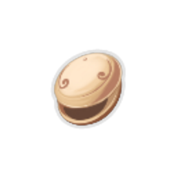
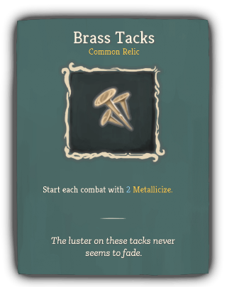
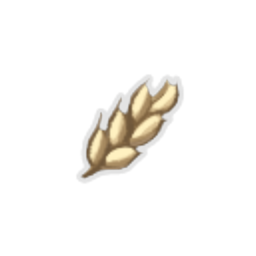
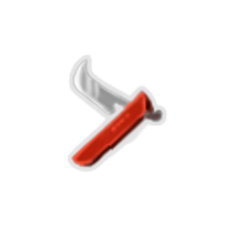
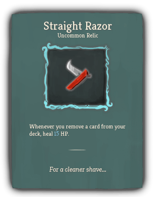
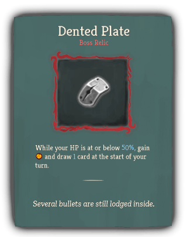
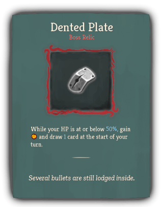

| Name |
Image |
Tier |
Pool |
Description |
Flavor |
| Old Locket |
 |
Starter |
Hermit_yellow |
At the start of each combat, add a Memento into your hand. |
There's a faded picture inside. |
| Brass Tacks |
 |
Common |
|
Start each combat with 2 Metallicize. |
The luster on these tacks never seems to fade. |
| Rye Stalk |
 |
Common |
Hermit_yellow |
At the end of your turn, ALL enemies lose HP equal to their hermit:Bruise. |
Still in mint condition, despite being chewed on for so long. |
| Broken Tooth |
 |
Uncommon |
|
Whenever you beat an Elite encounter, gain 1 Strength at the start of each combat for the rest of the Act. |
Appears too large to have come from a human jaw... |
| Spyglass |
 |
Uncommon |
Hermit_yellow |
If you end your turn hermit:Concentrated, gain an additional [E] next turn . |
Property of Kestin Highfin. |
| Straight Razor |
 |
Uncommon |
Hermit_yellow |
Whenever you remove a card from your deck, heal 15 HP. |
For a cleaner shave... |
| Black Powder |
 |
Rare |
Hermit_yellow |
At the end of your turn, deal 2 damage to ALL enemies for each hermit:Dead_On effect triggered. |
Handle with care. |
| Charred Glove |
 |
Rare |
Hermit_yellow |
Whenever you draw a Curse, your next attack deals 3 more damage. |
Parts of the glove still glow with otherworldly cinders. |
| Red Scarf |
 |
Rare |
Hermit_yellow |
Whenever you apply a debuff to an enemy, gain 2 Block. |
It's warm and fuzzy. |
| Clasped Locket |
 |
Boss |
Hermit_yellow |
Replaces Old Locket. First time you draw a Curse each turn, Exhaust it and draw 2 cards. Upon pickup, obtain 2 Injuries. |
It won't open anymore. |
| Dented Plate |
   |
Boss |
Hermit_yellow |
While your HP is at or below 50%, gain [E] and draw 1 card at the start of your turn. |
Several bullets are still lodged inside. |

{kind=link}


{kind=link}


{kind=link}